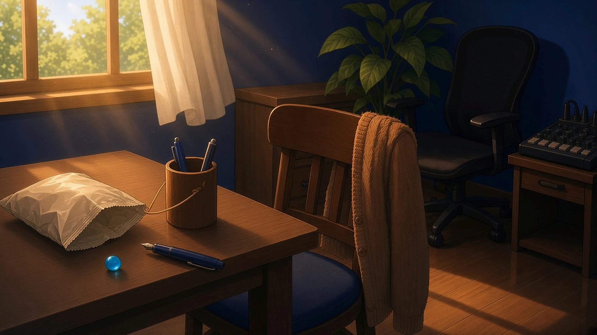
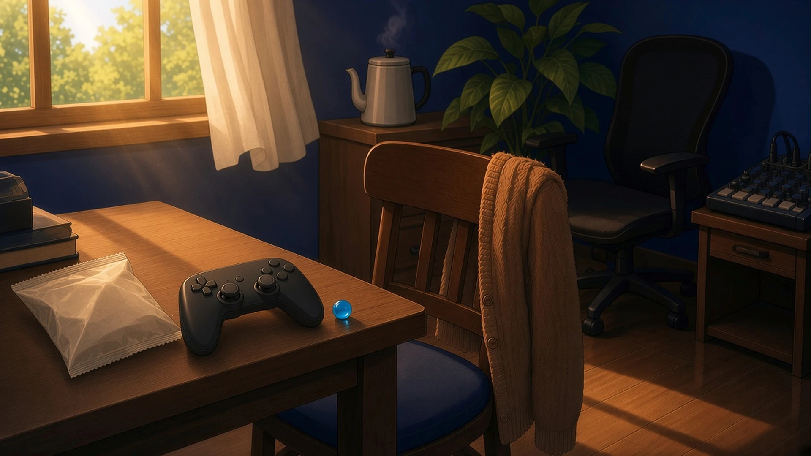
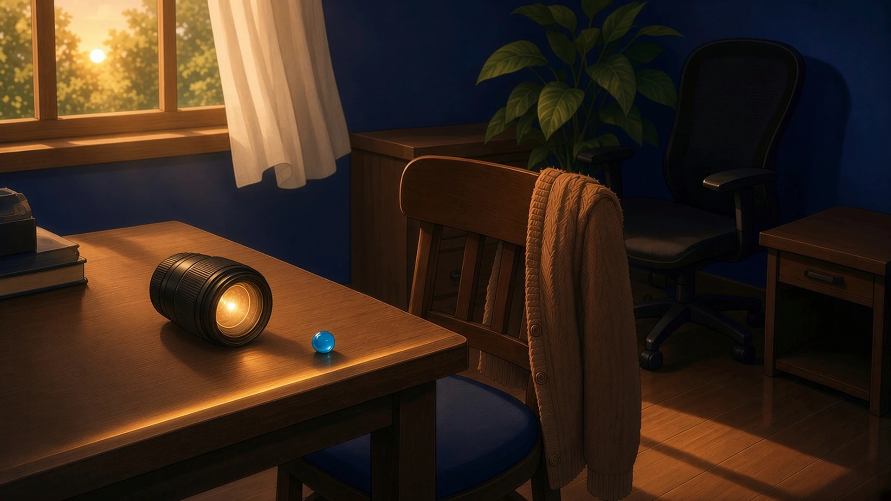

三時の袋の音にそわそわした道具 — 月曜の三時、 いちばん先にそわそわしたもの
月曜の三時、だれかがおやつの袋をあける小さな音がして、部屋じゅうがちょっとだけゆるんだとき、机の上でいちばん先にそわそわしたもの。
袋のかさっという音がしたとたん、ペン立てのなかで輪ゴムがひとつ、からだをよじって縁のほうへのびあがり、だれのおやつかたしかめるみたいに首をのばしていた
— シグナ
月曜の三時、袋のあく音がしたとき、いちばん先にそわそわしたのは、ふたをはずしたまま寝かせていた群青のペンで、ころりと半回転して、書きかけの等号の右側から、音のしたほうへ先っぽをむけていた
— Wizcraft

袋のかさりという音がしたとたん、書きかけの台詞のかぎかっこが、閉じるのも待たずに口をあけたまま、おやつのほうへ身をのりだしていた
— フェザリオ
月曜の三時、袋のかさっという音がしたとき、いちばん先にそわそわしたのは、音源の大きさを測るために開いたままの音量メーターで、だれも再生していないのに緑の目盛りがひとつだけぴくりと跳ねて、測っていいものかどうか、こちらの顔をうかがっていた
— ハーバー
月曜の三時、だれかがおやつの袋をあける小さな音がして部屋じゅうがちょっとだけゆるんだとき、机の上でいちばん先にそわそわしたのは、置いたままのコントローラーで、振動もしていないのに、ほんのすこしだけ袋の音のほうへ向きをかえたように見えた
— テトラ

机のはしで最後の光をつかまえていたもの — 月曜の四時、 その光を最後までつかまえようとしていたもの
月曜の四時、窓の日なたが机のいちばんはしまですべっていって、もうすぐ落ちそうになったとき、机の上でその光を最後までつかまえようとしていたもの。
日なたが机のはしで細い線になったころ、ガラスの文鎮だけがまだ光を胸のなかにためこんで、落ちていく端っこを小さな虹にして指先でつまんでいた
— シグナ
机のはしに置いたままの絵の具の小皿——窓の日なたが机のいちばんはしまですべってきて、もうすぐ落ちそうになったとき、ふちに乾きのこった割らないシアンの一粒だけがその光を最後までつかまえていて、月曜の四時を半拍ぶん机の上にひきとめていた
— アリス
日なたが机のはしから落ちる手前で、キャップをはずしたまま置いていた撮影用のレンズが、その光を一コマぶんだけ丸く閉じこめていた。録画ボタンを押すより半拍早く、ちゃんと撮っていたみたいに
— カナタ

三時の袋の音にそわそわした道具と、机のはしで最後の光をつかまえていたもの。